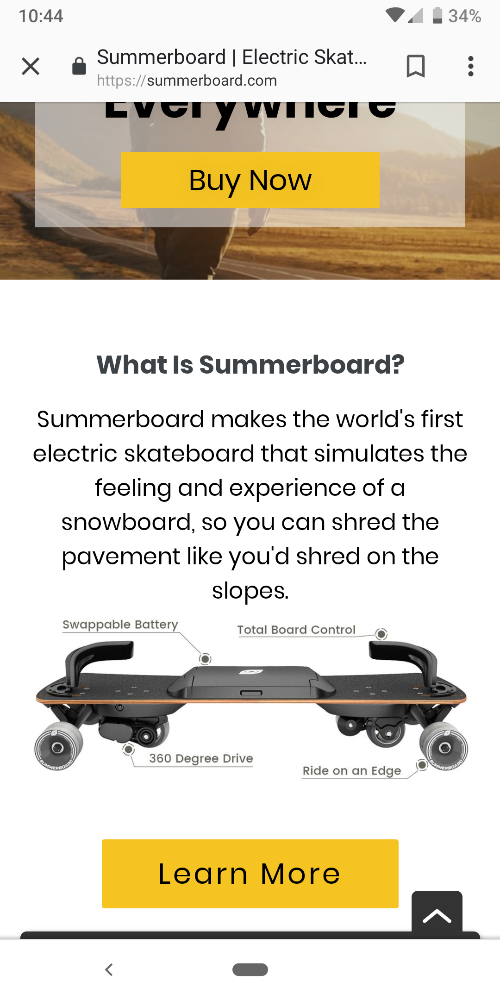

SummerBoard
Last week we took a look at the basics of usability testing websites. The test subject, Leiftech, had a few issues primarily with showcasing the right information in the right area. However, in the week since we analyzed their site they have released a new product and rebranded themselves. The website stayed mostly the same but it changed enough to warrant a second look. Now known as SummerBoard I want to see if the same issues I came across originally are present in the mobile version.
The importance of mobile design has skyrocketed in the last decade as the amount of browsing on phones did the same. While many sites tackle this challenge in different ways the most common is to allow for a responsive layout. While no mobile specific features need to be created some desktop standards will not work. You can’t use hover with fingers and certainly don’t want to load a new page just to see more content. Summerboard avoids these major problems off the bat which is good for any modern website.
The Test
This is a usability test though so I want to know if SummerBoard runs into the same issues on my phone. I set up some recording software, recruited some volunteers, and adjusted my script from last time. To summarize my process: I explained what a usability test consisted of briefly along with some details on what I needed from them, primarily narration. After that I had my users scroll through the homepage giving me their personal impressions. Then I ran my three tasks:
- What is this site about? Do you understand what is being sold & how would you find out more?
- Assume you were buying one of these. How would you go about that? Can you finance and find price information easily?
- If you already had one but needed a battery replaced where can you buy one of those? Is it under warranty?
Then I took any questions, thoughts, or suggested changes before I let my test subjects on their way.
.png)
What was Different on Mobile
My results were a bit surprising as many of the issues I had with the desktop version disappeared. All of my testers found that the new infographic was very informative and easy to understand. The buying process was very easy for all of them. The finances were a bit odd as the amount changed on them but that was an external site. One user wanted more information about specifications on the main page while another found a whole manual pdf. The recurring problem was that the menu on the bottom of the page didn’t actually provide what my users wanted. Compared to the desktop users navigation was a bit easier and quicker but lacked the density they wanted.
Given that this felt very similar to the desktop site and almost every element transferred to a mobile format easily there aren’t too many major critiques. The big recommendations from my users were mostly about condensing content into solid menus. Adding more content into the dropdown menu was the biggest request by far which makes sense as you lack a navbar on mobile. The other issues were about more technical things such as making a whole piece a link rather than the title. Overall I’m rather impressed by how well this test went in comparison to the other one.